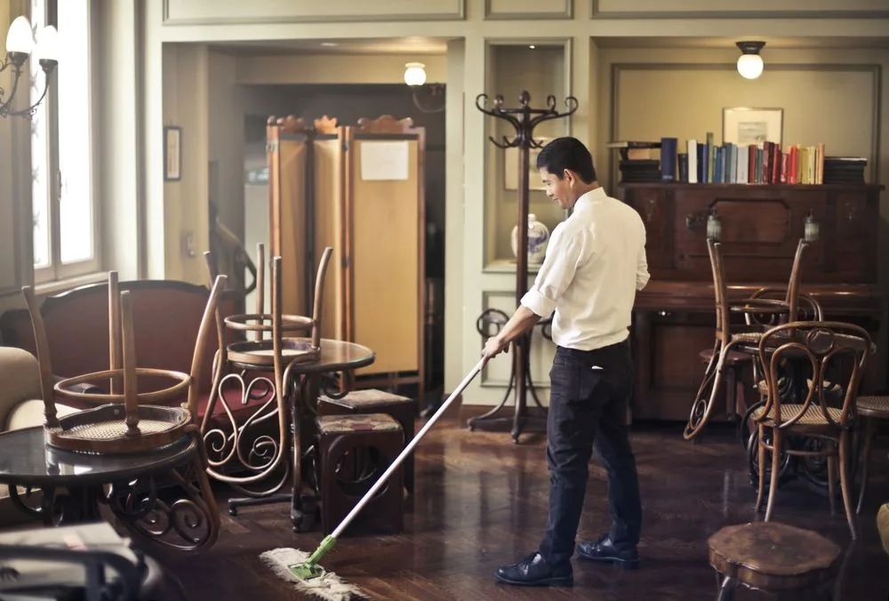

March 15, 2026
5 signs your cleaning company is cutting corners
How to spot the cleaners taking shortcuts with your facility, and what it costs you.
By the Ecco Facilities team · April 4, 2026
Running an office in New York City comes with a unique set of challenges. High foot traffic, tight spaces, strict building regulations, and the constant pressure to maintain a professional image all make cleaning a non-negotiable priority. Yet many office managers rely on guesswork rather than a structured plan. The result is missed tasks, inconsistent quality, and a workspace that slowly deteriorates without anyone noticing until it becomes a problem.
A well-organized cleaning checklist eliminates that guesswork. It creates accountability, ensures nothing gets overlooked, and keeps your office running at the standard your team and clients expect. Below is a comprehensive breakdown of what should be happening in your NYC office on a daily, weekly, monthly, and quarterly basis.
These are the basics that must happen every working day. Skip them even once and the effects are immediately noticeable.
Reception and common areas: Wipe down the front desk, dust surfaces, and clean glass doors and partitions. Your reception area is the first impression visitors get. Fingerprints on glass, dust on the welcome desk, or a cluttered entryway sends the wrong message before a single word is spoken.
Restrooms: Clean and disinfect all toilets, sinks, and countertops. Restock soap, paper towels, and toilet paper. Mop floors with a disinfecting solution. In a high-traffic NYC office, restrooms can go through supplies fast, and skipping a midday restock is a guaranteed way to frustrate your team.
Break rooms and kitchens: Wipe down countertops, tables, and appliance exteriors. Clean the sink. Empty the coffee grounds. Take out the trash before it overflows. A dirty break room is one of the top complaints employees have about their workplace, and it takes less than 15 minutes to keep it right.
Trash and recycling: Empty all bins throughout the office. Replace liners. In NYC, waste management regulations are strict, and overflowing bins attract pests faster than you might expect in a commercial building.
Floor care: Vacuum all carpeted areas with high foot traffic. Dust-mop or damp-mop hard floors, paying attention to entryways where dirt from the street accumulates throughout the day.
Weekly tasks address the buildup that daily cleaning cannot fully prevent. These are the tasks that keep your office from slowly declining in appearance and hygiene.
Deep vacuuming: Go beyond the main walkways. Vacuum under desks, along baseboards, and in corners where dust bunnies collect. Move lightweight furniture if needed to reach spots that daily passes miss.
Window sills and ledges: Dust and wipe all interior window sills, ledges, and blinds. In NYC, street-level dust and particulate matter settle quickly, especially if you are near a construction site or busy avenue.
Kitchen appliances: Clean the inside of the microwave, wipe the refrigerator shelves, and descale the coffee machine. These appliances get heavy daily use and develop grime and odors fast if left unattended for more than a week.
Dusting: Dust all surfaces that are not part of the daily routine: shelving, picture frames, decorative items, monitor stands, and filing cabinets. Pay special attention to conference rooms where clients visit.
Disinfecting high-touch surfaces: Door handles, elevator buttons, light switches, shared keyboards, and phone handsets should be disinfected thoroughly at least once a week, more frequently during cold and flu season.
Monthly tasks are the deep-cleaning efforts that prevent long-term damage and maintain the professional look of your space.
Carpet deep cleaning: Spot-treat stains and consider a rotational deep-clean schedule for different zones. NYC offices with heavy traffic can see carpet wear accelerate dramatically without monthly attention.
Light fixtures and ceiling tiles: Dust light covers, clean exposed fixtures, and check for discolored or damaged ceiling tiles. Dirty light fixtures can noticeably reduce lighting output, making your office feel dim and uninviting.
HVAC vents and returns: Wipe down all visible vents and air returns. Dust buildup in vents circulates allergens and reduces air quality. In older NYC buildings with aging HVAC systems, this task is especially important.
High surfaces and tops of cabinets: Clean the tops of bookshelves, storage units, and any elevated surfaces that are out of normal sight lines. Just because no one sees the dust does not mean it is not affecting air quality.
These are the big-ticket maintenance items that preserve your investment in the space and keep it looking move-in ready year-round.
Floor stripping and waxing: Hard floors in lobbies, hallways, and common areas need to be stripped, cleaned, and re-waxed every quarter to maintain their finish and prevent permanent scuffing or discoloration.
Upholstery cleaning: Office chairs, lobby seating, and any fabric-covered furniture should be professionally cleaned. These surfaces absorb body oils, sweat, and spills over time, and quarterly cleaning extends their lifespan significantly.
Exterior window washing: Coordinate with your building management for exterior window cleaning. Clean windows transform the natural light in your space and reflect well on your brand from the outside.
Full carpet extraction: Beyond monthly spot treatment, a full hot-water extraction every quarter removes deep-seated dirt and allergens that regular vacuuming cannot reach.
Looking at that list, one thing becomes clear: maintaining a truly clean office is a serious operational commitment. It requires trained staff, professional equipment, reliable scheduling, and consistent quality control. Most NYC businesses do not have the bandwidth to manage all of this in-house, nor should they.
Outsourcing to a professional cleaning company means every item on this checklist is handled by people who do it every day. You get consistent results, accountability, and the peace of mind that comes from knowing your space meets the standard your team and clients deserve.
At Ecco Facilities, we build customized cleaning programs around checklists exactly like this one. Our trained teams serve offices across New York City with eco-certified products and a commitment to quality that shows up in every detail. If your current cleaning setup is not covering everything on this list, reach out for a free proposal and let us show you what consistent, professional cleaning actually looks like.
Keep reading
March 15, 2026
How to spot the cleaners taking shortcuts with your facility, and what it costs you.

February 28, 2026
We break down janitorial vs. day porter service, and when you might want both.
April 5, 2026
The eight things worth evaluating before you sign a contract.
Done for you
We'll build a cleaning program around your space: every task on this list handled by a trained team, on a schedule that fits.